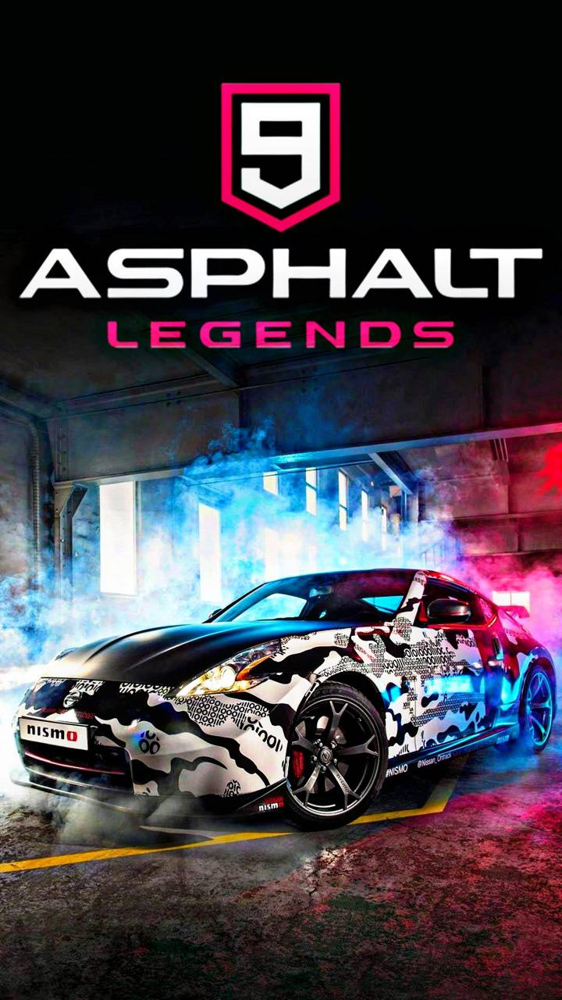
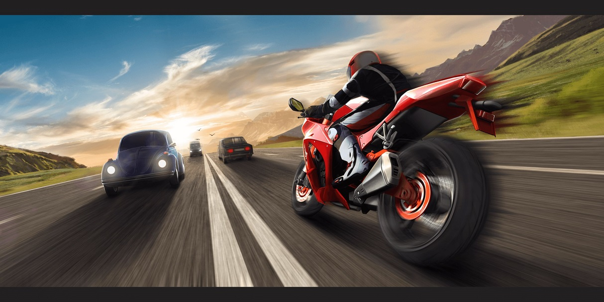
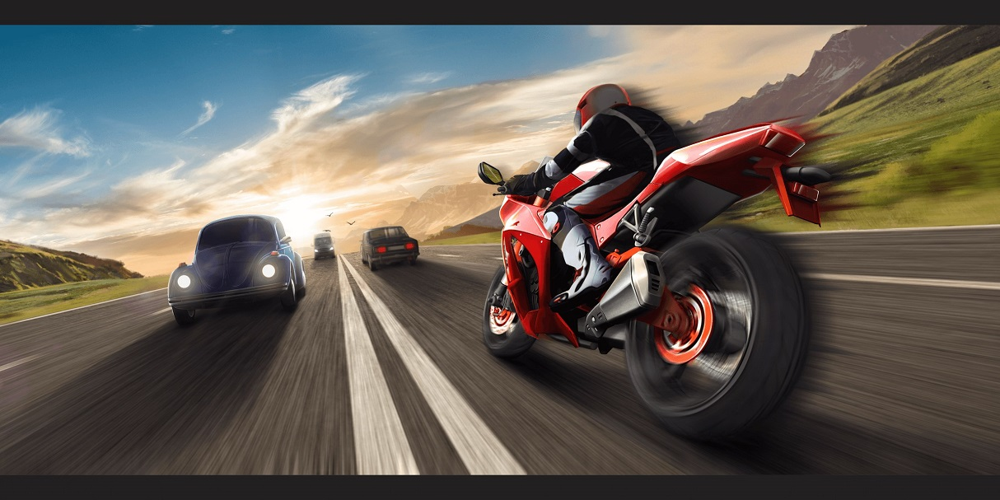

Ashpalt-9
Traffic rider
Racing Games are a video game genre in which the player participates in a racing competition. They may be based on anything from real-world racing leagues to fantastical settings. They are distributed along a spectrum between simulations and simplified arcade-style racing games. Go-kart racing games emerged in the 1990s as a popular sub-genre of the latter. Racing games may also fall under the category of sports games.
 

Simulation style racing games strive to convincingly replicate the handling of an automobile. They often license real cars or racing leagues, but will sometimes use fantasy cars built to resemble real ones if unable to acquire an official license for them. Vehicular behavior physics are a key factor in the experience. The rigors of being a professional race driver are usually also included (such as having to deal with a car's tire condition and fuel level). Proper cornering technique and precision racing maneuvers (such as trail braking) are given priority in the simulation racing games.
Although these racing simulators are specifically built for people with a high grade of driving skill, it is not uncommon to find aids that can be enabled from the game menu. The most common aids are traction control (TC), anti-lock brakes (ABS), steering assistance, damage resistance, clutch assistance and automatic gear changes.
Some of these racing simulators are customizable, as game fans have decoded the tracks, cars and executable files. Internet communities have grown around the simulators regarded as the most realistic and many websites host internet championships. Some of these racing simulators consist in Forza Motorsport, Gran Turismo, Assetto Corsa, Project Cars and many more.[50]